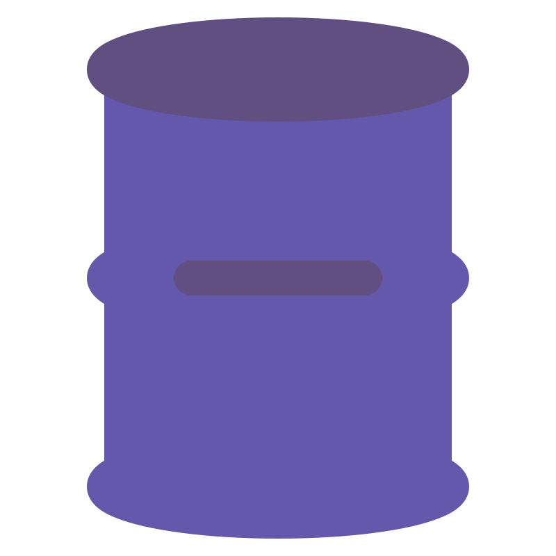
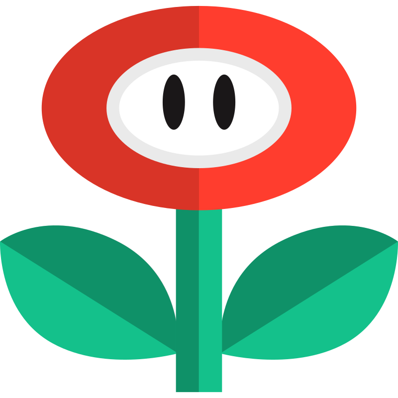

Barris rolando, desafios insanos e o início de um dos personagens mais icônicos da Nintendo.

O clássico dos arcades que apresentou Mario ao mundo e redefiniu os jogos de plataforma.
Lançado em 1981 nos arcades, Donkey Kong colocou os jogadores no controle de Jumpman (futuro Mario), que precisava escalar estruturas e desviar de barris para resgatar Pauline das garras do gorila Donkey Kong.
Com jogabilidade desafiadora, fases verticais inovadoras e personagens marcantes, o jogo se tornou um dos pilares da história dos videogames.
Descrição baseada na história original do jogo.


Barril
Plataforma Clássico